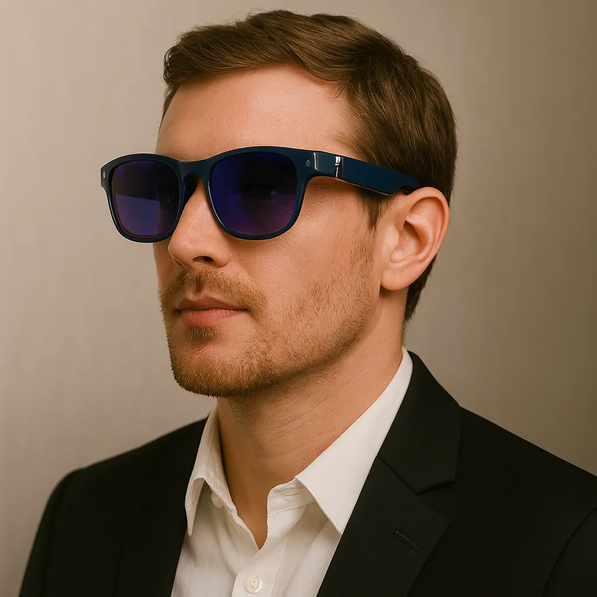
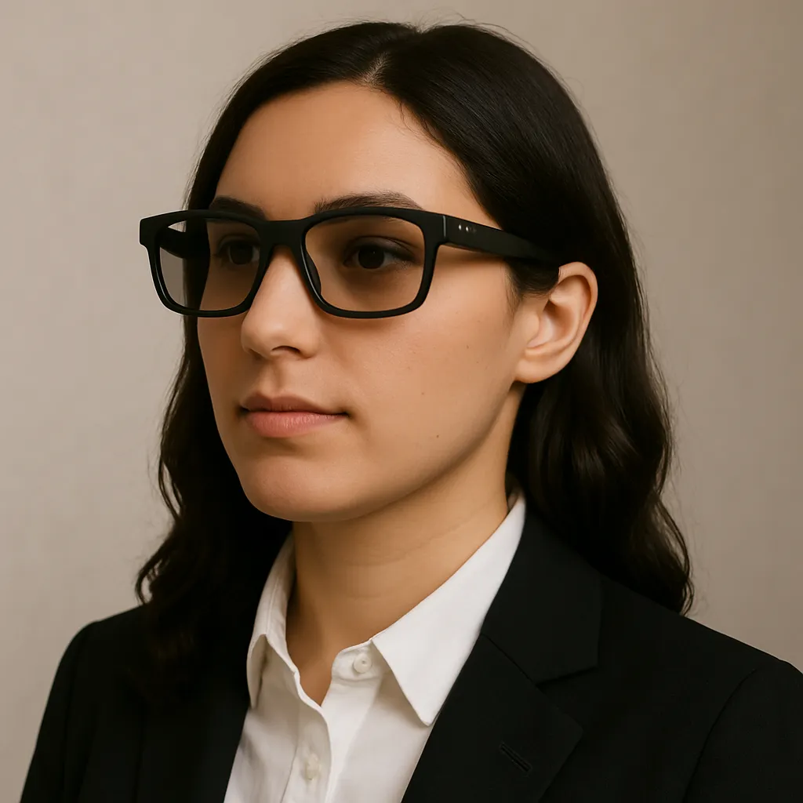
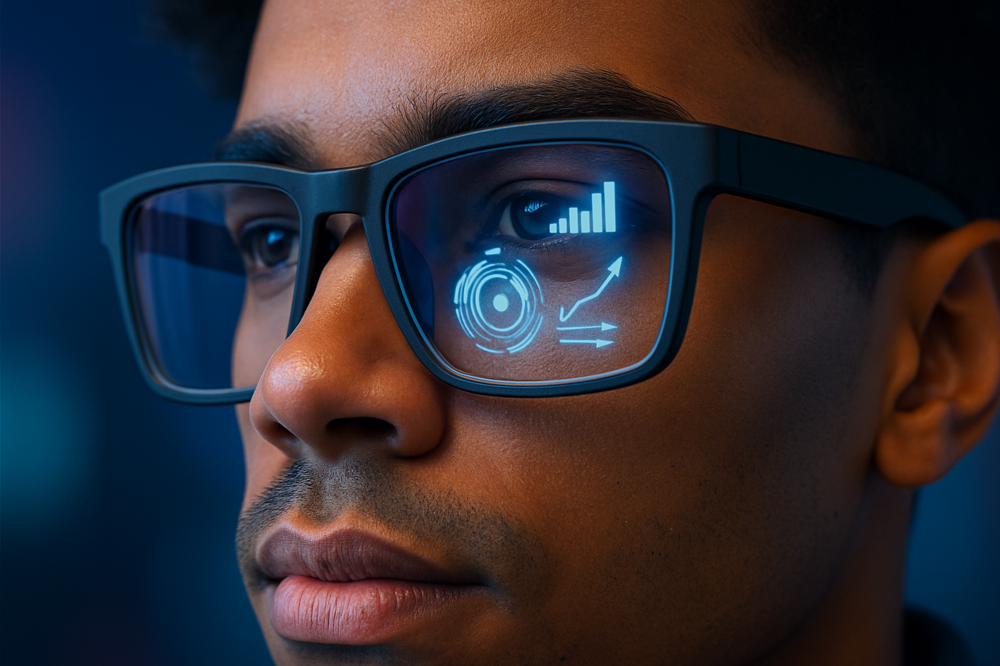
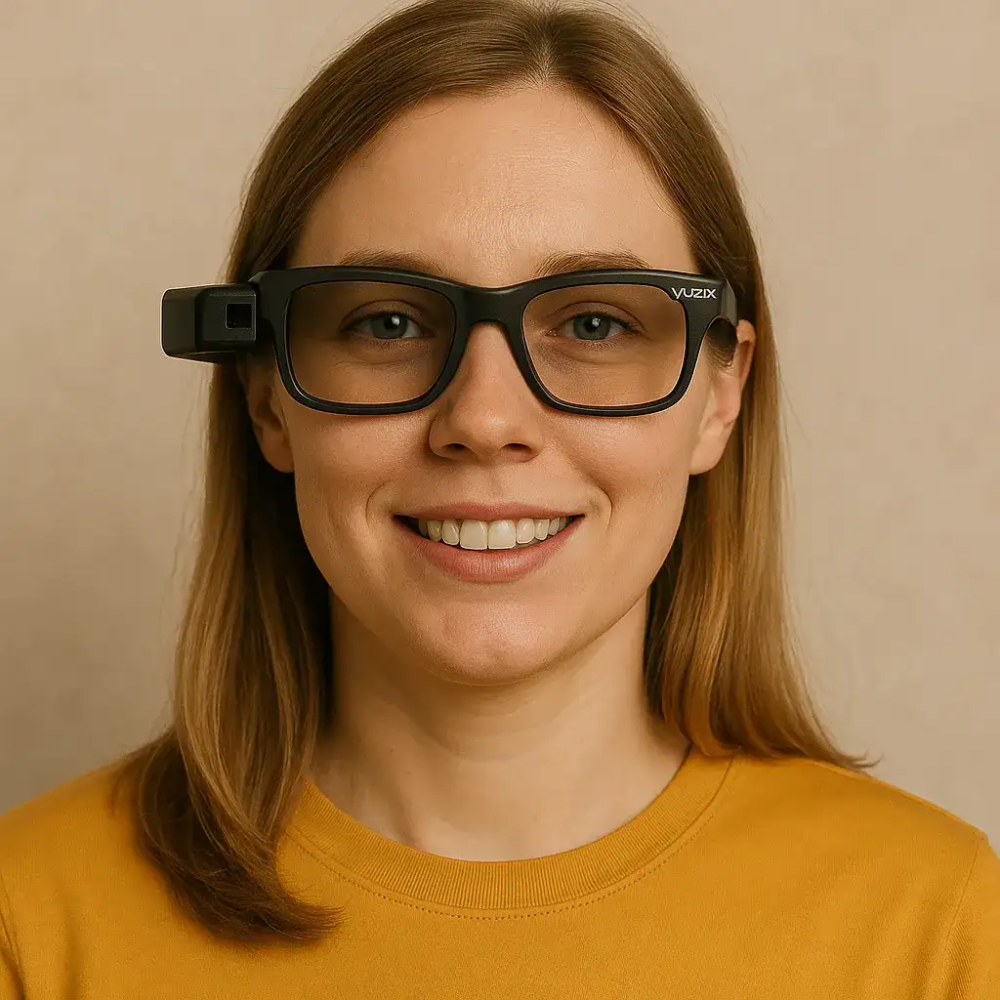
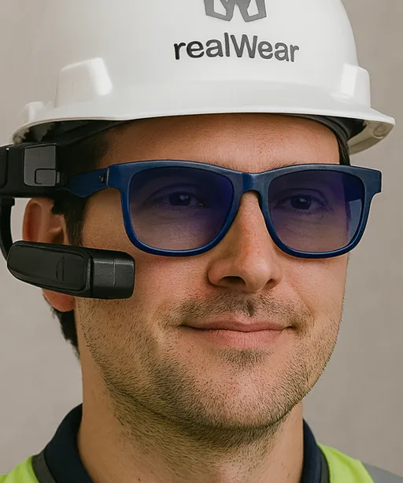
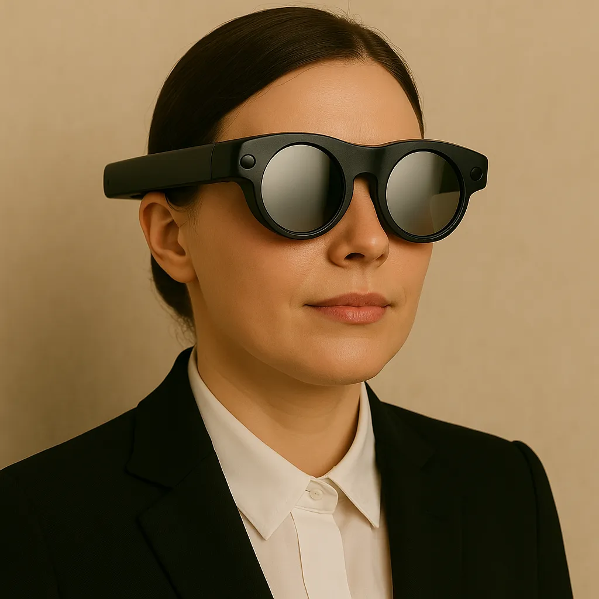

AR Glasses Companies: The Complete Industry Guide
The AR glasses market is not a two- or three-company race. Consumer technology giants, eyewear brands, specialist hardware makers, enterprise suppliers and optical-component companies are all shaping what comes next.
The competitive landscape
The AR-glasses market is now split across several overlapping categories: AI camera-and-audio glasses, display glasses, video-centric wearable displays and true optical-see-through AR. The companies below are grouped in an editorial market guide rather than ranked by overall quality. Market presence, shipment momentum, product breadth, distribution, technology and ecosystem reach vary by segment, so the same ordering should not be treated as a league table.
Recent industry data shows how quickly the category is moving. Counterpoint reported 98% year-over-year growth in global AR smart-glasses shipments in 2025, with particularly strong growth in waveguide-based products. In its Q2 2026 tracking, RayNeo, XREAL and VITURE remained major forces in video-centric AR, while Rokid, Meta, Even Realities, INMO and Alibaba were among the important waveguide-based players.
1. Meta
Why it matters: Meta has the largest consumer smart-glasses footprint, combining Ray-Ban and Oakley eyewear, Meta AI, camera-and-audio glasses, and display-equipped products. IDC reported Meta at 68.7% of the tracked smart-glasses market in Q2 2026. Its biggest competitive advantage is the combination of brand, distribution, AI software and established eyewear partnerships.
Watch: Ray-Ban Meta, Oakley Meta, Meta Ray-Ban Display and the company's expanding AI-glasses portfolio.
2. RayNeo — TCL

Why it matters: RayNeo is one of the strongest dedicated AR-glasses manufacturers, with products spanning video-display glasses and optical-see-through AR. Counterpoint reported RayNeo as the leading OEM in the video-centric AR segment in H2 2025, and its Q2 2026 data continued to place RayNeo among the largest AR-device vendors.
Watch: RayNeo's Air and GT families, MicroLED/waveguide development and international retail expansion.
3. XREAL

Why it matters: XREAL has built a substantial global consumer AR-display business around lightweight glasses, spatial displays and its Beam platform. Counterpoint placed XREAL second in the H2 2025 video-centric segment with 28% share, while the company is also pushing deeper into the next generation of Android XR and optical products.
Watch: XREAL One Pro, XREAL 1S, Beam Pro, XREAL Eye and Project Aura with Google.
4. VITURE

Why it matters: VITURE has become a major player in video-centric AR glasses, particularly for gaming, entertainment and portable multi-screen use. Counterpoint reported more than 200% year-over-year shipment growth in 2025, driven by its Luma and Beast product families.
Watch: Luma, Beast, SpaceWalker software and VITURE's expanding retail footprint.
5. Rokid

Why it matters: Rokid is one of the most significant waveguide-based AR-plus-AI competitors. Counterpoint identified Rokid as the leading OEM in the waveguide-based AR smart-glasses segment in H2 2025, helped by the rapid production ramp of Rokid Glasses and international expansion.
Watch: Rokid Glasses, Rokid AI, waveguide optics and the company's enterprise and consumer distribution.
6. Xiaomi

Why it matters: Xiaomi brings enormous smartphone distribution, manufacturing scale and an established AI/device ecosystem to smart eyewear. IDC placed Xiaomi among the leading smart-glasses vendors in Q1 2026, while its China-focused distribution gives it a powerful route to scale.
Watch: Xiaomi AI Glasses, Xiaomi HyperOS integration and future display-enabled eyewear.
7. Alibaba

Why it matters: Alibaba is important because it combines hardware with Qwen AI and a huge consumer-services ecosystem. Its Quark AI Glasses S1 helped establish Alibaba as a meaningful waveguide-based competitor in China, with integrations spanning services such as navigation, payments and shopping.
Watch: Quark AI Glasses, Qwen integration and Alibaba's wider smart-device ecosystem.
8. Even Realities

Why it matters: Even Realities has carved out a distinct position around lightweight, conventional-looking glasses with an information display. Counterpoint ranked Even Realities third in the waveguide-based segment in H2 2025 with 16% share.
Watch: G1 and G2, prescription support, navigation, translation and the company's minimalist approach to on-lens information.
9. Snap

Why it matters: Snap is a major platform player rather than simply a glasses manufacturer. Spectacles combine AR hardware with Lens Studio, creator tools and Snapchat's social ecosystem. The company announced its next-generation SPECS platform in September 2026, with new AI capabilities, experiences and enterprise partnerships.
Watch: SPECS, Snap OS, Lens Studio, developer adoption and enterprise deployments.
10. Google

Why it matters: Google's strength is the platform layer: Android XR, Gemini, search, Maps, AI and a large Android developer ecosystem. Google has also been working with hardware partners including Samsung and XREAL rather than relying on one Google-branded glasses product.
Watch: Android XR, Gemini on eyewear, Project Aura and Google's hardware partnerships.
11. Samsung
Why it matters: Samsung brings global hardware scale, Galaxy ecosystem integration and a direct route from phones and wearables into intelligent eyewear. Its Android XR work and intelligent-eyewear announcements make it an important platform and hardware contender even as the glasses category develops.
Watch: Galaxy XR, Samsung's intelligent-eyewear programme and integration with Galaxy AI and Android XR.
12. INMO

Why it matters: INMO is one of the more established Chinese waveguide-AR specialists. Counterpoint identified INMO as one of the notable waveguide-based OEMs in H2 2025, giving it relevance in the race toward lightweight display glasses.
Watch: INMO Air and other display glasses, optical development and expansion beyond China.
13. Brilliant Labs
Why it matters: Brilliant Labs takes a developer-friendly, AI-first approach. Its Frame platform helped establish a niche around open experimentation, on-device AI and programmable eyewear rather than mass-market scale.
Watch: Frame, developer tooling, open-source AI and future display products.
14. Vuzix

Why it matters: Vuzix remains an important enterprise AR specialist, particularly in waveguides, industrial workflows and professional wearable displays. Its competitive position is more focused than the consumer giants, but its optical and enterprise experience gives it a meaningful role in the market.
Watch: M-series and enterprise smart glasses, waveguide technology and OEM partnerships.
15. RealWear

Why it matters: RealWear focuses on hands-free industrial computing rather than fashion-led consumer glasses. Its devices are designed for field workers who need instructions, remote assistance and information while keeping both hands available.
Watch: Navigator devices, industrial AI, remote assistance and enterprise deployments.
16. Magic Leap

Why it matters: Magic Leap remains strategically important for optical-see-through AR and enterprise spatial computing. Its technology heritage is significant, although its current focus is more enterprise and platform-oriented than the mass-market AI-glasses push led by Meta and other consumer companies.
Watch: Magic Leap's optical technology, enterprise partnerships and its role as an AR technology supplier.
17. Huawei

Why it matters: Huawei has the smartphone, wearable and AI ecosystem needed to compete in intelligent eyewear, particularly in China. Its scale makes it a company worth watching even though its position in the global AR-glasses market is less visible than the leaders above.
Watch: Huawei smart eyewear, HarmonyOS integration and future AI/display products.
Other players worth watching
The competitive field is much wider than the names above. Apple remains an important long-term technology company to watch, although it has not publicly launched a mass-market AR-glasses product. Epson continues to serve enterprise and industrial display applications. Lenovo has experience across enterprise AR and XR. Qualcomm supplies important chips and reference technology rather than competing primarily as a consumer glasses brand. Smaller and emerging names including Vuzix, RealWear, Almalence, Lumus, Dispelix, DigiLens and various Chinese optical and display specialists can also influence the hardware stack.
How to read the market guide
This guide is a market-position reference, not a prediction of future winners. Shipment share can favour one type of glasses while technology leadership sits elsewhere. Meta is dominant in consumer AI glasses; RayNeo, XREAL and VITURE are particularly important in video-centric AR; and Rokid, Even Realities, INMO and other companies are pushing waveguide-based information displays. Those are different battlegrounds, so the order can change depending on the segment being measured.
How to follow the market
Track official product announcements, developer programmes, retail launches, regulatory filings where relevant, partner announcements and independent hands-on reviews. Treat patents as evidence that a company has explored an idea, not proof that a product will ship. Treat leaks and analyst forecasts as unconfirmed until corroborated.
Our editorial rule
We cover the whole smart-eyewear ecosystem but label products precisely: audio-only AI glasses, camera glasses, personal-display glasses, optical see-through AR and video-passthrough mixed reality. That distinction is central to useful reporting.